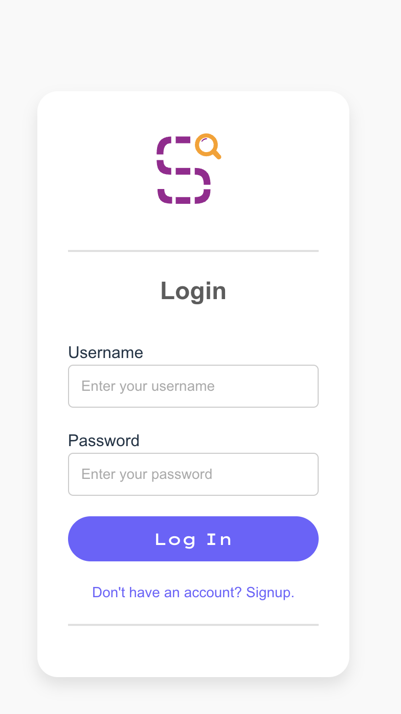
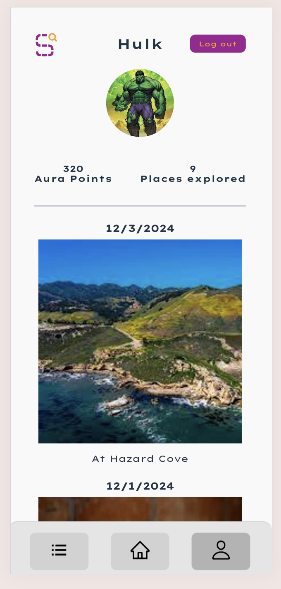
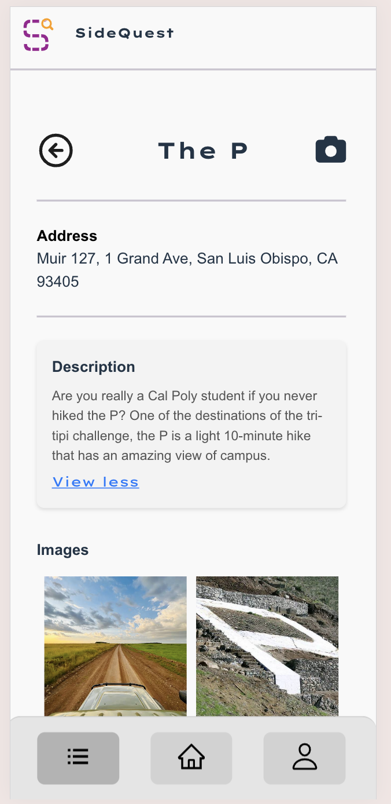
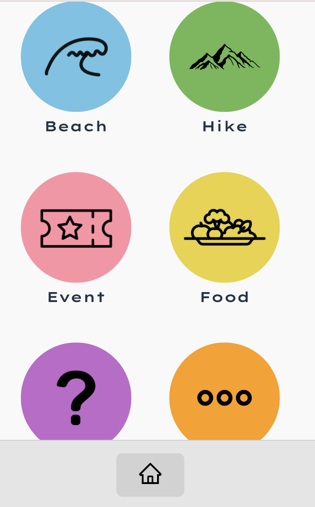

Portfolio
Sidequest
Sidequest is a social media web application that I made to help people find new places to visit in their city. It allows the user to search for the different places in the town based on the location type, like beaches, trails, restaurants, etc, and find the place's name, location, description and pictures and reviews of the place taken by other users. The user can also add their own reviews and pictures of the place.
Tech Stack: JavaScript, Node.js, Express, MongoDB, Mongoose, AWS S3, object storage

I used AWS S3 to store the images of the places and tracked the pictures using MongoDB. This way I could map each user to their picture and have it displayed for user friendly browsing.
The user can also add their own profile picture and view their own photos and the dates on which they took them. I also assigned Aura Points based on the number of pictures the user uploaded. This way the user could get a sense of accomplishment.
The user can also view the location of the place, the description, and other people's memories and photos in that location.
I used the react modal library so that the user can see a particular user's photo, and the meory and date assocaite with it in a friendly square pop up.
 Learn More about me...